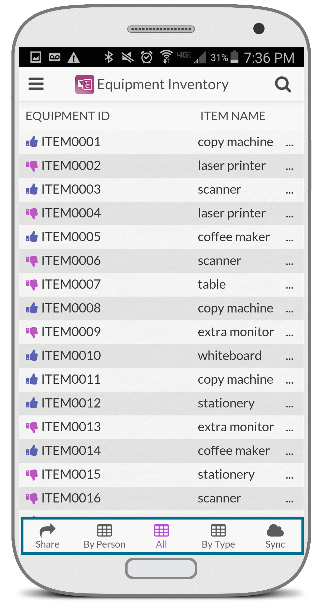
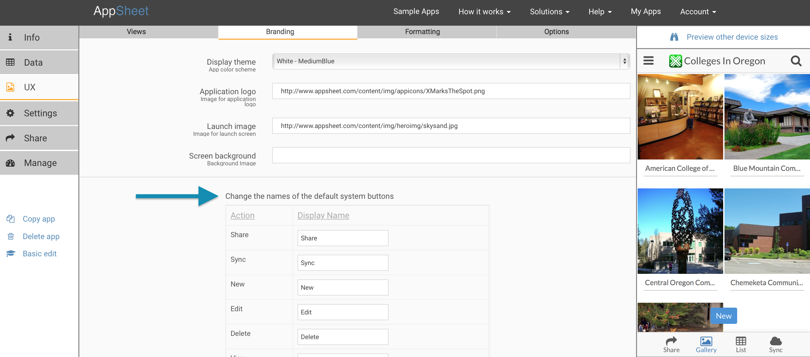
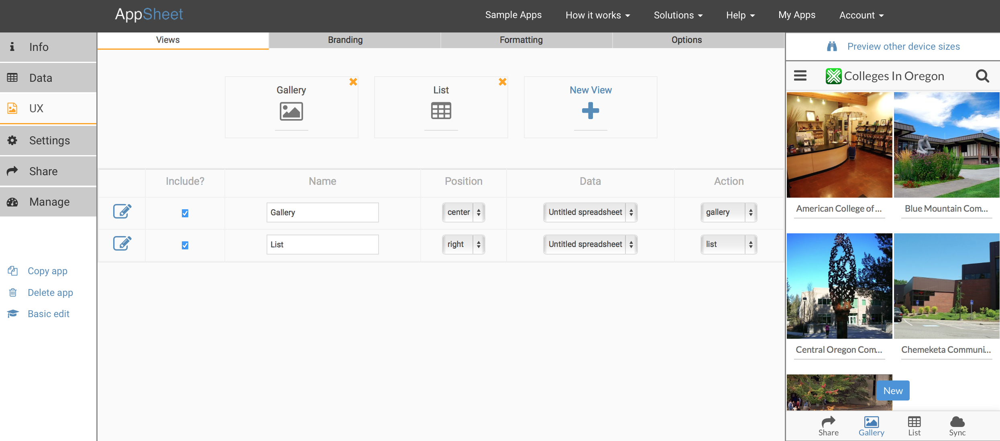
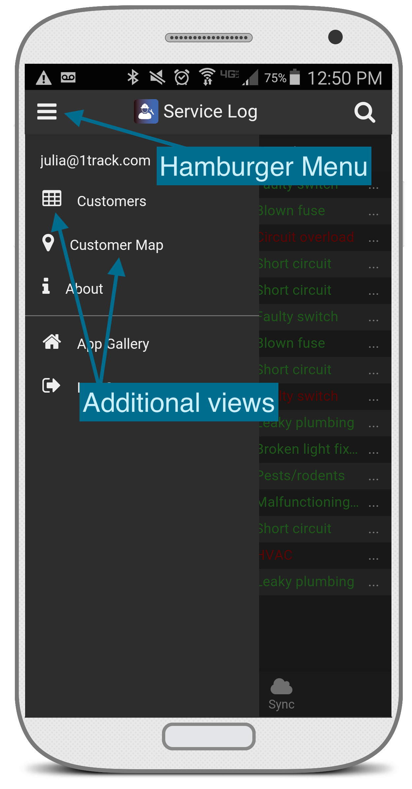
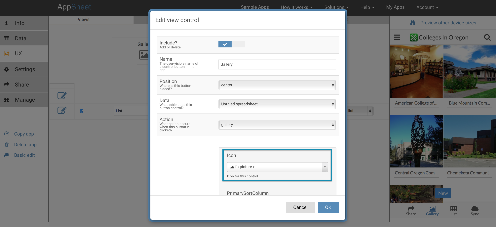

All AppSheet apps have a launch bar at the bottom. Users use the control buttons in the launch bar to switch between different views of the data.

Four buttons are present in all apps-- the Share button, the Sync button, the About button in the upper left "hamburger" menu, and the Log out button also found in the upper left "hamburger" menu.
Then there are buttons present in some apps, depending on the update modes you have chosen for your app-- New, Edit, Delete, Save, and Cancel.
Language-specific UX
You can choose to change the names of all of the above buttons to accommodate your language or terminology preferences.
To do this, use the Advanced Editor>UX>Branding tab. You can change the button names at the bottom of this page.
We generally suggest using short names, so that they fit comfortably on the screen.
While this is a very simple solution, it is usually sufficient to address a large class of "localization" requirements for apps. Most apps target users with a specific language in mind. If an app needs to work with different languages simultaneously, this solution will not be adequate.

Defining your view controls As the creator of the app, you get to define the other view control buttons. You do this in the UX tab of the editor. The buttons are identified by their position-- Left, Center, Right, or Menu (in the hamburger menu). For each of the positions, you choose a control name, a presentation type, and a couple of presentation options as described below. If you leave the name empty, no view control button is shown in that position.

Adding more than three data views
Your app can specify more than three data views from the Advanced Editor>UX>Views tab. To add a new view, click the 'New View' button. Each view has a position, which can be chosen under the 'Action' dropdown menu-- Left, Center, or Right. For more than three control views, choose the 'Menu' option-- those will appear in the app when you expand the dropdown ('hamburger') menu at the top-left corner.

See an example of extra view controls in the Contact Directory sample.
Finally, to define "reference views" as described in this article, you can choose 'ref' as the position of a view.
Specifying an icon for your data views
You can choose a custom icon for each of your data views. To do this, use the Advanced Editor>UX>Views tab. When you edit the view control, you can choose an icon for that view from the icons dropdown menu.
